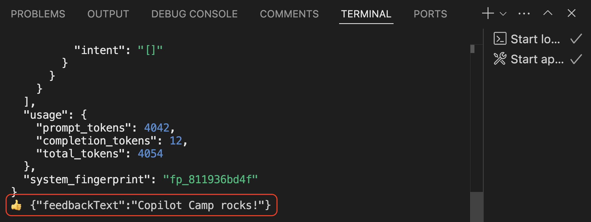
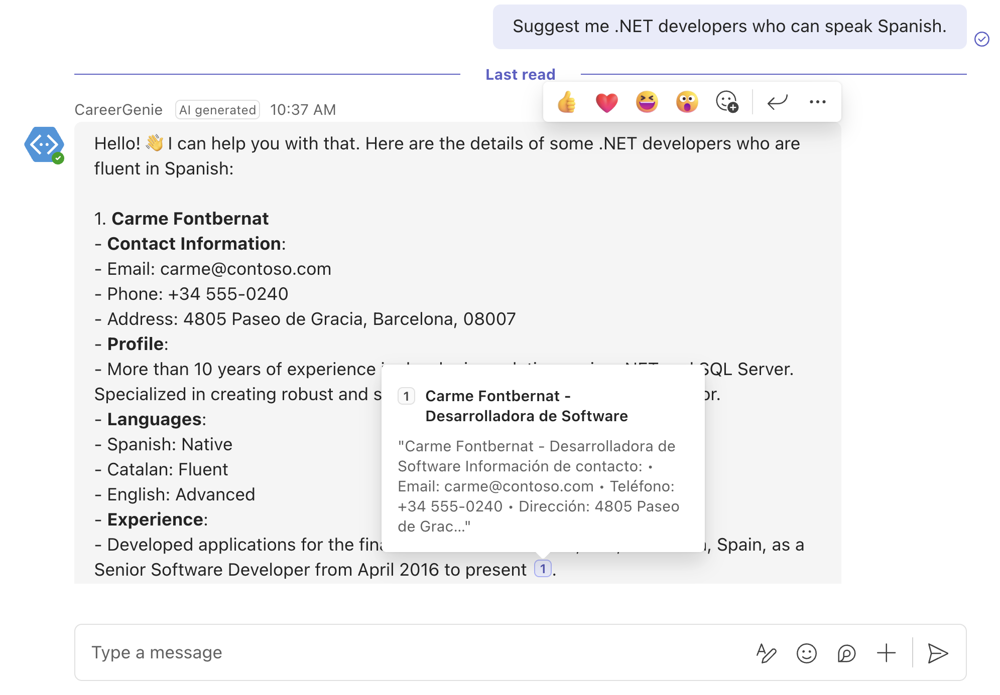
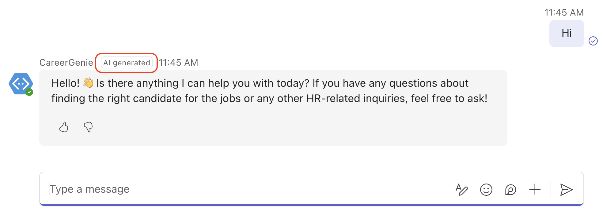
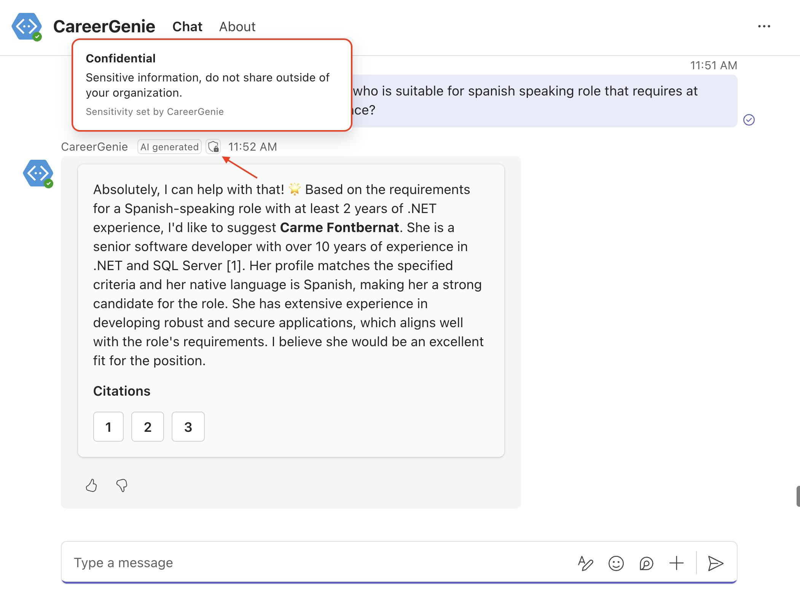

ラボ BTA3 - ユーザー エクスペリエンスの向上
このラボでは、Teams AI ライブラリが提供する Powered by AI 機能について学び、カスタム エンジン エージェントに組み込んでユーザー エクスペリエンスを向上させます。
このラボで行うこと:
- Powered by AI 機能とは何かを学ぶ
- フィードバック ループを有効化してユーザー フィードバックを収集する
- Adaptive Card を使用して引用 (citation) をカスタマイズする
- Generated by AI ラベルを有効化する
- Sensitivity ラベルを有効化する
Azure OpenAI と Teams AI library を使用してカスタム AI モデルとオーケストレーションを備えた Custom エンジン エージェントを構築したい場合は、これらの ラボ を実施してください
概要
Powered by AI とは？
Powered by AI は、カスタム エンジン エージェントとの対話をより魅力的かつ使いやすくするために Teams AI ライブラリが提供する機能群です。主な機能は次のとおりです。
-
フィードバック ループ: ユーザーは AI の応答をサムズアップまたはサムズダウンで評価できます。このフィードバックにより、AI の精度と有用性が継続的に向上します。
-
引用 (Citations): AI が情報源への参照を提示し、透明性と信頼性を確保します。
-
Generated by AI: AI システムが生成したメッセージには「AI generated」というラベルが付き、ユーザーは AI と人間の応答を区別できます。
-
Sensitivity 情報: 機密情報が共有される場合、Sensitivity ラベルが表示され、組織外へ共有してよいかどうかを示します。
前の演習では、Retrieval-Augmented Generation (RAG) とそのカスタム エンジン エージェントへの統合を学習しました。本演習では Powered by AI 機能を活用してユーザー エクスペリエンスをさらに高めます。以下の手順を実施します。
- フィードバック ループを実装する
- 引用をカスタマイズする
- AI 生成メッセージをラベル付けする
- Sensitivity 情報を表示する
Powered by AI 機能を組み込むことで、カスタム エンジン エージェントの透明性・信頼性・ユーザビリティを高め、全体的なユーザー エクスペリエンスを向上させられます。
演習 1: フィードバック ループを有効化する
この演習では、前のラボで作成したソース コードをそのまま使用します。
手順 1: アプリにフィードバック ループを組み込む
プロジェクト内の src/app/app.ts を開き、アプリケーション インスタンスの ai プロパティの波かっこ内に enable_feedback_loop: true を追加します。更新後のアプリケーション インスタンスは次のようになります。
const app = new Application({
storage,
ai: {
planner,
//feedback loop is enabled
enable_feedback_loop: true
},
});
フィードバック応答を処理するため、src/app/app.ts に次のコード スニペットを追加します。
app.feedbackLoop(async (_context, _state, feedbackLoopData) => {
if (feedbackLoopData.actionValue.reaction === 'like') {
console.log('👍' + ' ' + feedbackLoopData.actionValue.feedback!);
} else {
console.log('👎' + ' ' + feedbackLoopData.actionValue.feedback!);
}
});
手順 2: フィードバック ループ機能をテストする
Visual Studio Code の Run and Debug タブから Debug in Teams (Edge) または Debug in Teams (Chrome) を選択してアプリをデバッグします。ブラウザーで Microsoft Teams が開いたら、アプリ詳細が表示されるので Add を選択し、チャットを開始します。
ヒント: この演習をローカルでテストする
これまでに実装した Teams AI ライブラリの一部機能は Teams App Test Tool では正しく動作しない場合があります。必ず Teams 上でローカル デバッグしてください。
フィードバック ループをテストする前に、「Hi」や「Suggest me .NET developers who can speak Spanish.」などの質問を入力してください。カスタム エンジン エージェントの応答下部左側にサムズアップ・サムズダウンのボタンが表示されることがわかります。

次にフィードバック ループを試します。サムズアップまたはサムズダウン ボタンをクリックすると、フィードバック カードが表示されます。カードのテキスト フィールドにフィードバックを入力し、Submit をクリックしてください。

フィードバックが記録されたか確認するには、Visual Studio Code に戻り、ターミナルを確認します。サムズアップ/ダウンの結果とコメントが表示されます。

デバッグでフィードバック ループを深掘り
コードをデバッグすると動作をより理解できます。app.feedbackLoop にブレークポイントを設定し、サムズアップまたはサムズダウンをクリックしてテストすると、feedbackLoopData.actionValue.reaction にリアクションが、feedbackLoopData.actionValue.feedback にテキスト フィードバックが格納されていることがわかります。
演習 2: Adaptive Card で引用をカスタマイズする
カスタム エンジン エージェントでデータ ソースを定義すると、Teams AI ライブラリは関連ドキュメントを参照する引用を自動的に有効化します。現在の動作を確認するため、「Suggest me .NET developers who can speak Spanish.」などの質問をしてみてください。引用にカーソルを合わせるとドキュメントの冒頭が表示されます。

この演習では、引用の表示をさらにカスタマイズし、Adaptive Card を使用して引用の提示方法を変更します。
手順 1: 引用用の Adaptive Card を作成する
src/app/ フォルダーに card.ts という新しいファイルを作成し、次のコード スニペットを追加します。
import { AdaptiveCard, Message, Utilities } from '@microsoft/teams-ai';
/**
* Create an adaptive card from a prompt response.
* @param {Message<string>} response The prompt response to create the card from.
* @returns {AdaptiveCard} The response card.
*/
//Adaptive card to display the response and citations
export function createResponseCard(response: Message<string>): AdaptiveCard {
const citationCards = response.context?.citations.map((citation, i) => ({
type: 'Action.ShowCard',
title: `${i+1}`,
card: {
type: 'AdaptiveCard',
body: [
{
type: 'TextBlock',
text: citation.title,
fontType: 'Default',
weight: 'Bolder'
},
{
type: 'TextBlock',
text: citation.content,
wrap: true
}
]
}
}));
const text = Utilities.formatCitationsResponse(response.content!);
return {
type: 'AdaptiveCard',
body: [
{
type: 'TextBlock',
text: text,
wrap: true
},
{
type: 'TextBlock',
text: 'Citations',
wrap: true,
fontType: 'Default',
weight: 'Bolder'
},
{
type: 'ActionSet',
actions: citationCards
}
],
$schema: 'http://adaptivecards.io/schemas/adaptive-card.json',
version: '1.5'
};
}
この Adaptive Card は、引用を Action.ShowCard ボタンとして一覧表示し、クリックすると詳細を表示します。また、回答の本文を引用ボタンと共に表示します。ユーザーは引用ボタンをクリックすることで、全文書を確認できます。
手順 2: PredictedSayCommand で引用体験をカスタマイズする
PredictedSayCommand の役割は？
PredictedSayCommand は AI システムが実行するレスポンス ディレクティブです。PredictedSayCommand をカスタマイズすることで、引用やフィードバック ループなど Powered by AI 機能をカスタム エンジン エージェントのアクティビティに細かく統合でき、AI の応答をアプリ要件に合わせて調整できます。
src/app/app.ts を開き、冒頭に次のスニペットを追加して Adaptive Card をインポートします。
import { createResponseCard } from './card';
続いて "botbuilder" のインポートに CardFactory を追加します。更新後は次のようになります。
import { CardFactory, MemoryStorage, MessageFactory, TurnContext } from "botbuilder";
次に "@microsoft/teams-ai" のインポートに AI と PredictedSayCommand を追加します。更新後は次のようになります。
import { Application, ActionPlanner, OpenAIModel, PromptManager, AI, PredictedSayCommand} from "@microsoft/teams-ai";
引用をカスタマイズするため、src/app/app.ts に次の PredictedSayCommand アクションを追加します。
app.ai.action<PredictedSayCommand>(AI.SayCommandActionName, async (context, state, data, action) => {
let activity;
if (data.response.context && data.response.context.citations.length > 0 ) {
const attachment = CardFactory.adaptiveCard(createResponseCard(data.response));
activity = MessageFactory.attachment(attachment);
}
else {
activity = MessageFactory.text(data.response.content);
}
activity.entities = [
{
type: "https://schema.org/Message",
"@type": "Message",
"@context": "https://schema.org",
"@id": ""
}
];
activity.channelData = {
feedbackLoopEnabled: true
};
await context.sendActivity(activity);
return "success";
});
手順 3: カスタマイズした引用体験をテストする
Visual Studio Code の Run and Debug タブから Debug in Teams (Edge) または Debug in Teams (Chrome) を選択してアプリをデバッグします。Teams がブラウザーで開いたら Add を選択し、チャットを開始します。
ヒント: この演習をローカルでテストする
これまでに実装した Teams AI ライブラリの一部機能は Teams App Test Tool では正しく動作しない場合があります。必ず Teams 上でローカル デバッグしてください。
新しい引用体験をテストするため、まず「Hi」や「Hello」と挨拶します。その後、「Can you suggest any candidates for a senior developer position with 7+ year experience that requires Japanese speaking?」のような質問を入力してください。

Adaptive Card でカスタマイズされた引用体験では、引用ごとにボタンが表示されます。引用ボタンをクリックしてドキュメントを展開し、各候補者の履歴書を確認してください。
演習 3: Generated by AI ラベルを有効化する
この演習では、PredictedSayCommand を使ってユーザー エクスペリエンスのカスタマイズを続けます。AI と人間の応答を区別できるよう、AI システムが生成したメッセージに「AI generated」ラベルを表示します。
手順 1: PredictedSayCommand で Generated by AI ラベルを有効化する
src/app/app.ts を開き、PredictedSayCommand アクションを見つけて activity.entities 内に次のコード スニペットを追加します。
// Generated by AI label
additionalType: ["AIGeneratedContent"]
更新後の activity.entities は次のようになります。
activity.entities = [
{
type: "https://schema.org/Message",
"@type": "Message",
"@context": "https://schema.org",
"@id": "",
// Generated by AI label
additionalType: ["AIGeneratedContent"],
},
];
手順 2: Generated by AI ラベルをテストする
Visual Studio Code の Run and Debug タブから Debug in Teams (Edge) または Debug in Teams (Chrome) を選択してアプリをデバッグします。Teams がブラウザーで開いたら Add を選択し、チャットを開始します。
ヒント: この演習をローカルでテストする
これまでに実装した Teams AI ライブラリの一部機能は Teams App Test Tool では正しく動作しない場合があります。必ず Teams 上でローカル デバッグしてください。
Generated by AI ラベルをテストするには、Career Genie に挨拶するだけです。最初のメッセージの上部に小さな「AI generated」ラベルが表示されます。

演習 4: Sensitivity ラベルを有効化する
最後の演習では、PredictedSayCommand を利用して Sensitivity ラベルを有効化します。Career Genie は人事タスクに精通しており、組織内で機密情報を共有するケースが多いでしょう。こうしたシナリオでは、AI 生成メッセージの上部に Sensitivity ラベルが表示され、組織外へ情報を共有してよいかどうかが示されます。
手順 1: PredictedSayCommand で Sensitivity ラベルを有効化する
src/app/app.ts を開き、PredictedSayCommand アクションを見つけて activity.entities 内に次のコード スニペットを追加します。
// Sensitivity label
usageInfo: {
"@type": "CreativeWork",
name: "Confidential",
description: "Sensitive information, do not share outside of your organization.",
}
更新後の activity.entities は次のようになります。
activity.entities = [
{
type: "https://schema.org/Message",
"@type": "Message",
"@context": "https://schema.org",
"@id": "",
// Generated by AI label
additionalType: ["AIGeneratedContent"],
// Sensitivity label
usageInfo: {
"@type": "CreativeWork",
name: "Confidential",
description: "Sensitive information, do not share outside of your organization.",
}
},
];
手順 2: Sensitivity ラベルをテストする
Visual Studio Code の Run and Debug タブから Debug in Teams (Edge) または Debug in Teams (Chrome) を選択してアプリをデバッグします。Teams がブラウザーで開いたら Add を選択し、チャットを開始します。
ヒント: この演習をローカルでテストする
これまでに実装した Teams AI ライブラリの一部機能は Teams App Test Tool では正しく動作しない場合があります。必ず Teams 上でローカル デバッグしてください。
Sensitivity ラベルをテストするため、「Hi」や「Can you suggest a candidate who is suitable for spanish speaking role that requires at least 2 years of .NET experience?」などの質問をしてみてください。

Career Genie のメッセージで「AI generated」ラベルの隣に Sensitivity ラベルが表示されます。Sensitivity ラベルにカーソルを合わせると、組織固有のガイダンスを確認できます。
おめでとうございます！
Powered by AI キットでユーザー エクスペリエンスを向上させる ラボ BTA3 を完了しました！ さらに探求したい場合は、このラボのソース コードが Copilot Developer Camp リポジトリ で公開されています。
次は ラボ BTA4 - 認証を使用してソリューションを保護する に進みましょう。Next を選択してください。